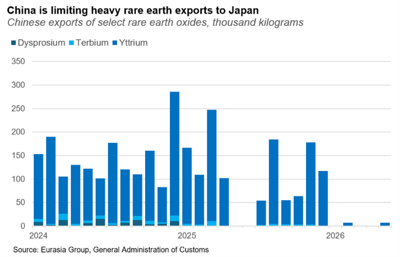
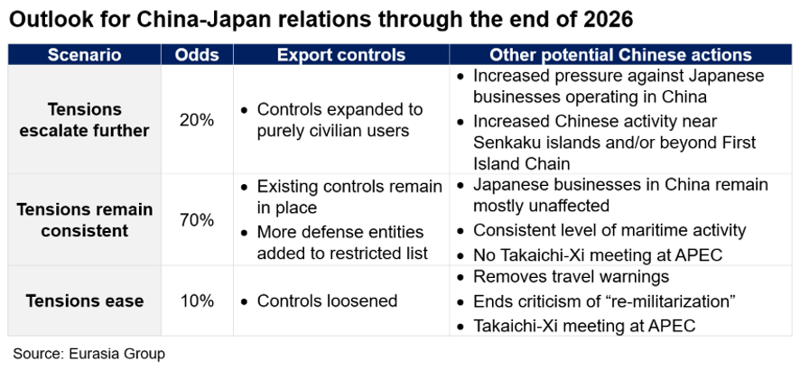

|
 |
|||
|
||||
|
||
Beijing is not ready to forgive Tokyo yet despite strategic blowback. Eight months after Prime Minister Takaichi Sanae’s remarks that Japan could intervene militarily in a Taiwan conflict, Chinese officials and scholars continue to express outrage at what they view as the broader threat posed by Japan’s “re-militarization.” Beijing has severed nearly all diplomatic communications with Tokyo, while continuing to make unrealistic demands of Japan a precondition to resume talks. It is also overlooking the harm its pressure campaign is doing to China’s own interests by strengthening Takaichi’s political position and increasing support in Japan for a more hawkish defense policy. China’s efforts to rally international support for its campaign have mostly failed. Regional countries such as India, Australia, South Korea, the Philippines, and Vietnam are drawing closer to Tokyo. That said, Beijing’s scorched-earth tactics have likely had more success in deterring these governments from voicing support for Taiwan. Political signal to maintain pressure on Japan comes from highest levels. China’s anger likely stems from the bilateral meeting between Takaichi and President Xi Jinping at the APEC summit in October, which irritated Xi and preceded her controversial remarks in the Diet. Xi’s personal involvement will limit space for lower-level Chinese officials, particularly at the foreign ministry, to find de-escalatory pathways. Xi and Takaichi will likely cross paths again at the APEC summit in Shenzhen in November—as well as the G20 summit in December—but will probably not hold a bilateral meeting this year. China-Japan diplomacy will remain frozen in the interim and likely for the duration of Takaichi’s time in office (see: China-Japan tensions will remain higher for longer, 23 April 2026). China’s retaliation will probably remain focused on blocking Japan’s defense buildout. Export controls on dual-use items including critical minerals are meant to starve Japanese defense companies, with another 40 entities added to a restricted list in late June. In practice, rare earth trade has largely ceased, with Chinese commerce officials in charge of approving export licenses reluctant to grant them even for civilian use.  Adding more Japanese entities to the restricted list beyond the 80 named to date is possible, although the effect would have diminishing returns. Japan’s defense-related firms already struggle to secure shipments of rare earths and are more worried about the reputational risk of being added to China’s blacklist. Beijing will probably refrain from expanding retaliation to purely civilian companies or Japanese businesses in China, given the risk of harming broader investment sentiment or destabilizing the US-China truce. China is also wary of the potential spillover effects of escalating security tensions with Japan.  Japanese companies feeling pinch of Chinese export controls but will mostly keep quiet. Firms complain to the government but are reluctant to speak out publicly. They also recognize that Chinese authorities’ decision to detain two Japanese nationals in May was based on legitimate violations of Chinese export law, rather than geopolitical retaliation. Japanese industry is surviving for now through a combination of stockpiles, recycling rare earth elements, reducing rare earth manufacturing content, and accessing critical minerals via other sources. These measures will be insufficient over time but likely enough to survive through the end of the year. Tokyo will continue to seek a diplomatic solution and refrain from retaliating against China, aiming to avoid further escalation with Beijing, which arguably holds more significant leverage. Tokyo will focus on building resilience in critical infrastructure and supply chains. Seeing little hope of near-term improvement in ties, Japanese officials have accelerated a whole-of-government effort to strengthen economic security: bolstering supply of energy, critical minerals, and semiconductors; hardening critical infrastructure such as ports; and strengthening data protection. By the end of the year, the government will announce a revised national security strategy that will elevate the importance of economic security. Still, officials acknowledge that it will take years to reduce Japan’s dependence on China, keeping it vulnerable to Chinese retaliation in the meantime. Japan will continue to lobby Washington for more support. Since the announcement of China’s export controls against Japan in January, Tokyo has emphasized to the US government that a supply chain crisis for Japan will ultimately be a crisis for the US. This message appears to be gaining traction; in May, Treasury Secretary Scott Bessent told his Chinese counterpart that restrictions on rare earth exports to Japan risk violating the US-China truce, although Washington has taken no punitive action and Beijing’s policies remain unchanged. Tokyo believes increasing complaints from US industry about shortages of rare earth magnets at their upstream Japanese suppliers will be the most effective channel to change Beijing’s behavior. |